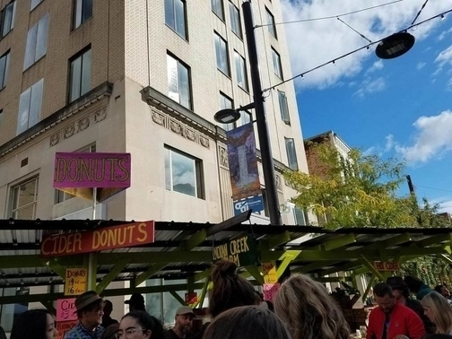

Dates
Join us at Ithaca's Apple Harvest Festival from September 28, 2018 to September 30, 2018
Times
Friday, September 28, 2018
12pm to 6pm
Saturday and Sunday, September 29 and 30, 2018
10am to 6pm
Best Times
According to Cornellians, the best time to attend is in the morning, around 10am to 11am: that way you can avoid long lines (get back to studying!) and leisurely browse what AppleFest has to offer!
Welcome!
Welcome to the Cornell student's essential guide to the annual Downtown Ithaca Apple Harvest Festival, presented by Tompkins Trust Company. Find out what "AppleFest" is all about!
